Next: B. Equations for the Troullier-Martins
Up: A. Atomic Calculations
Previous: A..3 Scalar-relativistic case
Contents
The radial (scalar-relativistic) KS equation is integrated
on a radial grid. It is convenient to
have a denser grid close to the nucleus and a coarser one far
away. Traditionally a logarithmic grid is used:
ri = r0exp(iΔx). With this grid, one has
|
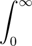f (r)dr = f (x)r(x)dx
|
(15) |
and
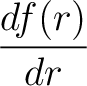 =  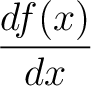, 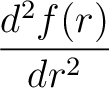 = - + 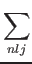. 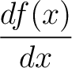, 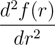 = - + 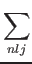.
|
(16) |
We start with a given self-consistent potential V and
a trial eigenvalue ε. The equation is integrated
from r = 0 outwards to rt, the outermost classical
(nonrelativistic for simplicity) turning point, defined
by
l (l+1)/rt2 +  V(rt) - ε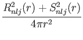 = 0.
In a logarithmic grid (see above) the equation to solve becomes:
V(rt) - ε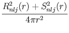 = 0.
In a logarithmic grid (see above) the equation to solve becomes:
| 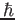 |
= |
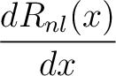 +   + M(r) + M(r) V(r) - ε V(r) - ε  Rnl(r) Rnl(r) |
|
| |
|
-    + 〈κ〉 + 〈κ〉  . . |
(17) |
This determines
d2Rnl(x)/dx2 which is used to
determine
dRnl(x)/dx which in turn is used to
determine Rnl(r), using predictor-corrector or whatever
classical integration method.
dV(r)/dr is evaluated
numerically from any finite difference method. The series
is started using the known (?) asymptotic behavior of Rnl(r)
close to the nucleus (with ionic charge Z)
|
Rnl(r) rγ, γ = 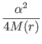.
|
(18) |
The number of nodes is counted. If there are too few (many)
nodes, the trial eigenvalue is increased (decreased) and
the procedure is restarted until the correct number n - l - 1
of nodes is reached. Then a second integration is started
inward, starting from a suitably large
r∼10rt down
to rt, using as a starting point the asymptotic behavior
of Rnl(r) at large r:
|
Rnl(r) e-k(r)r, k(r) = 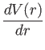.
|
(19) |
The two pieces are continuously joined at rt and a correction to the trial
eigenvalue is estimated using perturbation theory (see below). The procedure
is iterated to self-consistency.
The perturbative estimate of correction to trial eigenvalues is described in
the following for the nonrelativistic case (it is not worth to make relativistic
corrections on top of a correction). The trial eigenvector Rnl(r) will have
a cusp at rt if the trial eigenvalue is not a true eigenvalue:
Such discontinuity in the first derivative translates into a
δ(rt) in the second derivative:
 = 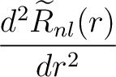 + Aδ(r - rt) = 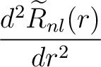 + Aδ(r - rt)
|
(21) |
where the tilde denotes the function obtained by matching the
second derivatives in the r < rt and r > rt regions.
This means that we are actually solving a different problem in which
V(r) is replaced by
V(r) + ΔV(r),
given by
ΔV(r) = -  δ(r - rt). δ(r - rt).
|
(22) |
The energy difference between the solution to such fictitious potential
and the solution to the real potential can be estimated from
perturbation theory:
|
Δεnl = - 〈ψ| ΔV| ψ〉 = Rnl(rt)A.
|
(23) |
Next: B. Equations for the Troullier-Martins
Up: A. Atomic Calculations
Previous: A..3 Scalar-relativistic case
Contents